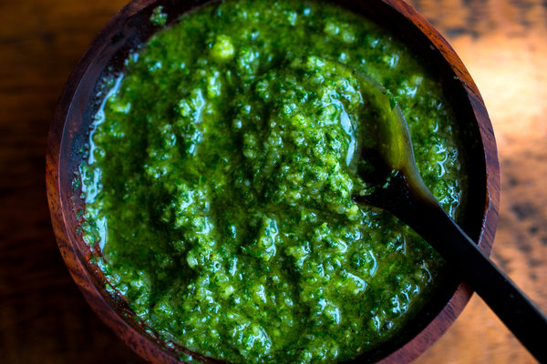

Pesto

Pesto is a mouthful of bright summer
Pesto is an easy to make sauce consisting only of 5 simple ingredients; garlic, pine nuts, basil leaves, parmesean, olive oil, and of course salt.
Ingredients:
- 2 Large cloves garlic
- 2 Cups fresh basil leaves (no stems)
- 1/2 Cup Extra-virgin olive oil
- 1/2 Cup freshly greated parmesean cheese
- Salt (to taste)
- Combine basil leaves, pine nuts, and garlic in a food processor and process until very finely minced
- With the machine running slowly dribble in the oil and process until the mixture is smooth.
- Add the cheese and process very briefly, just long enought to combine.